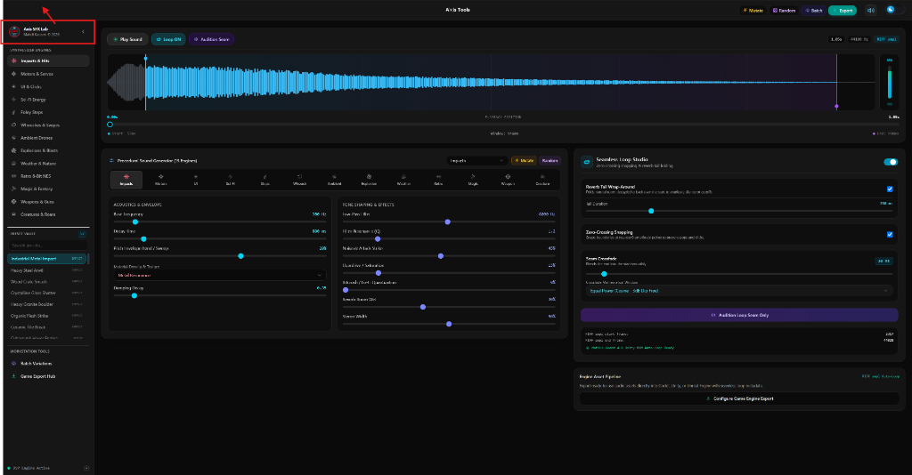

Generate instant, game-ready sound effects and seamless audio loops for games and digital media. Powered by 13 specialized procedural synthesizer engines, 838 physical acoustic presets, real foley modeling, and native cloud search. Engineered in Rust for blazingly fast native performance under 20 MB.

Click any sound pad below to preview audio samples synthesized directly with Axis SFX Lab's physical modal and foley engines.
Everything game developers, sound designers, and indie creators need to build professional audio assets in seconds.
Physical modal synthesis, harmonic FM, granular noise shaping, non-linear dispersion, and sub-bass resonators customized for physical impacts, motors, UI, sci-fi energy, foley steps, whooshes, ambient drones, explosions, weather, retro 8-bit, magic, weapons, and creatures.
Toggle Real SFX mode to simulate authentic microphone room boundary reflections, gentle analog tape saturation, and acoustic air absorption that replicate recordings from high-end foley microphones (Sennheiser MKH 416 & Neumann U87).
Snap markers to mathematically calculated zero-crossings, audition loop transition junctions (last 1s into first 1s) with one click, and enable tail folding for seamless continuous loops in game engines.
Search, stream, and import thousands of authentic royalty-free sound effects directly from Pixabay and LotsofSounds. Powered by native Rust HTTP streaming that operates completely free of browser CORS limitations.
Hit [M] to apply subtle 5% organic seed drift to resonance frequencies and envelope dynamics, generating natural variations for footsteps and hits without changing the sound character.
Generate 4 to 20 randomized acoustic variations in a single click. Audition and export entire variation banks packed with consistent naming conventions ready for game engine randomizers.
One-click presets tailored specifically for Godot Engine, Unity, and Unreal Engine 5. Customize sample rate (44.1kHz, 48kHz, 96kHz), bit depth (16-bit, 24-bit, 32-bit float), channels (Stereo/Mono), and file formats (WAV, OGG, MP3, FLAC).
Sleek dark mode with glowing emerald accents for night-time studio sessions, plus a high-contrast slate light mode designed for bright workspaces and daytime development.
Explore the clean, intuitive workstation designed to eliminate clutter and give you full physical control over your audio design.
Real-time stereo waveform visualizer with playback head, volume fader, and envelope controls.
Engineered from scratch to replace bloated multi-hundred-megabyte software with an ultra-lightweight, native binary that launches in 100 milliseconds.
Raw native performance with zero Chromium overhead. Fast memory management, custom PRNG audio seed engines, and high-performance native file I/O.
Mathematical acoustic modeling simulating material stiffness, damping decay, non-linear dispersion, and soft analog tube saturation.
Modern, fluid user interface with immediate real-time visual feedback and seamless desktop window integration.
See how Axis SFX Lab compares against traditional DAWs, static online sound libraries, and browser web synthesizers.
| Feature | Axis SFX Lab | Traditional DAWs | Online Sound Libraries | Web Synthesizers |
|---|---|---|---|---|
| Application Size | < 20 MB (Portable) | 1 GB – 20 GB | Browser only | Browser only |
| Procedural Synthesis | 13 Dedicated Engines | Complex plugin chains needed | Static audio files only | Basic 8-bit only |
| Physical Acoustic Presets | 838 Factory Presets | Manual synth programming | Requires search/download | Limited presets |
| Seamless Loop Editor | Zero-Crossing & Seam Audition | Manual cutting & crossfading | Rarely looped | Basic looping |
| Cloud Sound Search | Direct Pixabay Streaming | None (External download) | Manual web download | None |
| Batch Variation Bank | 1-Click Multi-Variations | Manual bounce | Manual download | None |
| Cost & Licensing | 100% Free & Open Source (MIT) | $200 – $600+ | Subscription / Per-sound | Free with limitations |
Available now as a zero-installation standalone portable binary or automated installer for Windows 10 & 11.
Zero installation required. Download, double-click, and start designing sound effects immediately.
Download Portable (.exe)Full installer wizard with desktop shortcut, Start Menu entry, and clean Windows uninstaller.
Download Setup (.exe)Windows Installer package ideal for system administrators, IT deployment, and enterprise silent installs.
Download MSI InstallerUnpacked package with standalone executable, application icon, documentation, and MIT license.
Download Portable ZipDrag-and-drop installer package for Apple Silicon (M1–M4) and Intel Macs.
Download macOS DMGCompressed `.app` bundle archive for manual placement in Applications.
Download .app.tar.gzStandalone portable binary. Runs on Ubuntu, Fedora, Arch, Debian, and Linux Mint.
Download AppImageNative `.deb` installer with system integration and package manager updates.
Download .deb PackageCompressed standalone executable bundle for custom path and directory execution.
Download .tar.gzYes! All sound effects procedurally synthesized inside Axis SFX Lab are 100% royalty-free. You are free to use them in commercial games, films, YouTube videos, and interactive apps without attribution.
Real SFX mode passes raw procedural synthesizers through an organic physical acoustic stage with multi-tap room boundary micro-reflections, warm non-linear tube/tape saturation, and air absorption filtering that closely mirrors studio foley microphones.
Yes. Simply drag and drop any WAV, MP3, OGG, or FLAC file into the workstation. Axis SFX Lab will instantly analyze its waveform, compute peaks, and generate zero-crossing loop markers.
The Game Export Hub includes tailored profiles for Godot Engine, Unity, and Unreal Engine 5 with automatic channel, bit-depth, and sample-rate formatting.